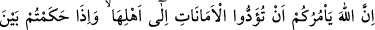
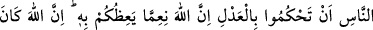
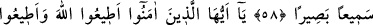
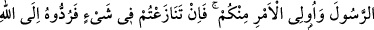
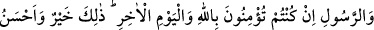
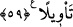

EMÂNETİ EHLİNE VERMEK
58- Allah size, emânetleri ehli olanlara vermenizi ve insanlar arasında
hükmettiğiniz zaman adaletle hükmetmenizi emreder. Allah size ne güzel öğüt
veriyor! Şüphesiz Allah her şeyi işiten, her şeyi görendir.
59- Ey îmân edenler! Allah’a itâat edin. Peygamber’e ve sizden olan ulülemre
(idarecilere) de itâat edin. Eğer bir hususta anlaşmazlığa düşerseniz –Allah’a ve
âhiret gününe inanıyorsanız- onu Allah’a ve Rasûl’e götürün (onların talimatına
göre halledin). Bu hem hayırlı, hem de netîce bakımından daha güzeldir.
“Allah size emânetleri ehli olanlara vermenizi emreder.”
Bu âyet, Kâbe’nin muhâfızı olan Osman b. Talha b. Abdüddâr hakkında nâzil olmuştur.
Şöyle ki:
Rasûlullah (s.a.v.) fetih günü Mekke’ye girdiğinde Osman, Kâbe’nin kapısını
kilitleyip tavanına çıkmış ve anahtarı Hz. Peygamber’e vermeyi reddederek; “Ben onun
Allah’ın rasûlü olduğunu bilseydim, mâni olmazdım.” demiştir. Bunun üzerine Ali b.
Ebû Tâlib (k.v.) Osman’ın elini bükerek anahtarı aldı ve Kâbe’yi açtı. Rasûlullah
(s.a.v) Kâbe’ye girip iki rekat namaz kıldı. Dışarı çıkınca, Abbas (r.a) ondan anahtarı
kendisine vermesini, hacılara su verme (sikâyet) ve Kâbe’yi koruma (sidânet)
hizmetlerinin kendisinde toplanmasını istedi. İşte bu âyet bunun üzerine nâzil oldu. Âyet
inince, Hz. Peygamber (s.a.v) Hz. Ali’ye anahtarları Osman’a verip özür dilemesini
emretti. Osman, mazeret beyân eden Hz. Ali’ye: “Beni zorlayıp canımı acıttın, şimdi de
nezâket mi gösteriyorsun” deyince Hz. Ali: “Allah Teâlâ, senin hakkında âyet indirdi
deyip bu âyeti okudu. Osman da bunun üzerine: “Şehadet ederim ki Allah’tan başka bir
ilah yoktur, Muhammed de O’nun peygamberidir.” dedi. O esnâda Cibrîl inerek
Rasûlullah (s.a.v)’e Kâbe muhâfızlığı görevinin kıyâmete kadar Osman’ın çocuklarına
âit olduğunu haber vermiştir. Osman ise daha sonra Medîne’ye hicret edip anahtarı oğlu
Şeybe’ye vermiştir. Anahtar günümüze kadar onun çocuklarında kalmıştır.
“İnsanlar arasında hükmettiğiniz zaman adâletle” insaf ölçüleri içerisinde, herkese